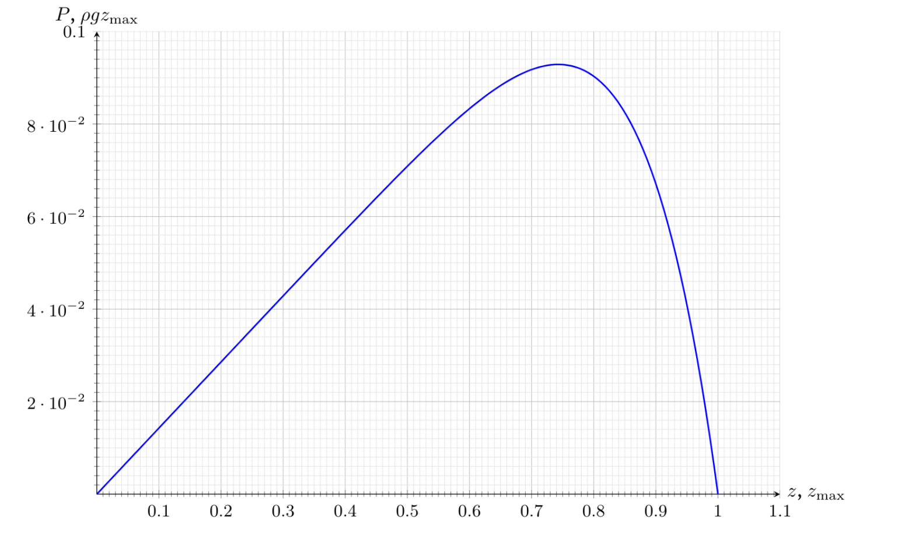

A1.0.2pt 용기 바닥에서의 압력 $p_1$을 구하라. 답을 $m$, $g$, $S$로 나타내라.
A2.0.3pt 용기 벽에 작용하는 압력 $p(z)$를 깊이 $z$의 함수로 구하라. 답을 $\rho$, $g$, $z$로 나타내라.
파스칼 법칙에 따르면 액체의 압력은 잠긴 깊이에만 의존한다. 따라서
B1.0.5pt 이 층의 평형 조건을 써라. 식에는 압력 $P(z)$와 $P(z+\mathrm{d}z)$, $\mathrm{d}z$, 용기 벽에 대한 평균 압력 $\sigma(z)$, 층의 질량 $\mathrm{d}m$, 그리고 $\mu$, $g$, $R$이 포함될 수 있다.
연직축에 대한 평형 조건은 다음과 같다.
B2.1.2pt 바닥 압력 $P$를 알갱이 기둥의 충전 높이 $h$의 함수로 다음과 같이 쓸 수 있음을 보여라: $$P = A + Be^{-h/\lambda}.$$ 매개변수 $A$, $B$, $\lambda$를 구하라. 답을 겉보기 밀도 $\rho$와 $g$, $R$, $K$, $\mu$로 나타내라.
관계식 $\mathrm{d}m = \rho\pi R^2\,\mathrm{d}z$와 $\sigma(z) = KP(z)$를 이용하면 다음을 얻는다.
$$\frac{\mathrm{d}P}{\mathrm{d}z} + \frac{2K\mu P(z)}{R} - \rho g = 0$$$P(0) = 0$임을 고려하여 이 방정식을 풀면
$$P(z) = \frac{\rho g R}{2\mu K}\left(1 - e^{-2\mu K z/R}\right)$$이다. 얻은 식에 $z = h$를 대입하여 바닥에서의 압력을 구하자.
$$P(h) = \frac{\rho g R}{2\mu K}\left(1 - e^{-2\mu K h/R}\right)$$따라서
B3.1.2pt 알갱이의 겉보기 밀도 $\rho$와 계수 $K$를 구하라. 답을 유효숫자 2자리로 제시하라. 이 부분에서는 용기 반지름의 수치를 $R = 50~\mathrm{cm}$, 마찰 계수를 $\mu = 0.30$으로 가정한다.
알갱이 층의 높이가 작을 때, 바닥 압력의 높이 의존성은 근사적으로 다음 식으로 기술된다.
$$P(h) \approx \rho g h$$그래프의 점 $(0, 0)$에서 접선을 그리자. 이 접선의 기울기는 다음과 같다.
$$k_1 = 6.5~\mathrm{kPa/m}$$따라서
$h$가 충분히 크면 바닥 압력은 일정한 값에 도달한다. 이 정상 상태의 압력은 다음과 같다.
$$P_\infty = 26.7~\mathrm{kPa}$$따라서
C1.0.1pt 주어진 근사에서 용기 단면 반지름의 높이 의존성 $r(z)$를 구하라. 답을 $R$, $\alpha$, $z$로 나타내라.
C2.0.6pt 이 층의 평형 조건을 써라. 식에는 압력 $P(z)$와 $P(z+\mathrm{d}z)$, $\mathrm{d}z$, 용기 벽에 대한 평균 압력 $\sigma(z)$, 층의 질량 $\mathrm{d}m$, 그리고 $\mu$, $g$, $r(z)$, $r(z+\mathrm{d}z)$, $\alpha$, $R$이 포함될 수 있다.
연직축에 대한 평형 조건은 다음과 같다(여기서 $\alpha \ll 1$로 가정하므로 $\cos\alpha \approx 1$, $\sin\alpha \approx \alpha$이다).
C3.0.8pt 매개변수 $A$, $\gamma$, $\beta$를 구하라. 답을 알갱이의 겉보기 밀도 $\rho$와 $g$, $z_{\max}$, $K$, $\mu$, $\alpha$로 나타내라.
이제 앞 단계에서 얻은 식에서 $\mu$에 비해 $\alpha$ 항을 무시한다. 분립체의 자유 표면 근처에서 압력은 0임에 유의하자.
$$P(0) = A(1-\gamma) = 0$$이로부터
$P(z)$의 의존성은 다음 미분 방정식으로 기술된다.
$$\frac{\mathrm{d}(Pr^2)}{\mathrm{d}z} + 2K\mu P(z)r(z) - \rho g r^2(z) = 0$$$\xi = \dfrac{z}{z_{\max}}$로 표기하자. 문제에 주어진 $P(z)$의 식을 $\gamma = 1$임을 고려하여 미분 방정식에 대입하면 다음을 얻는다.
$$\begin{aligned}\alpha^2 A z_{\max}\left(-1 + \beta(1-\xi)^{\beta-1}\right)(1-\xi)^2 &+ 2(K\mu-\alpha)A\alpha z_{\max}(1-\xi)\left(1-\xi-(1-\xi)^{\beta}\right)\\ &- \rho g\alpha^2 z_{\max}^2(1-\xi)^2 = 0\end{aligned}$$이 식이 모든 $\xi$에 대해 성립하려면 $(1-\xi)^2$과 $(1-\xi)^{\beta+1}$의 계수가 각각 0이어야 한다. 따라서
$$-A\alpha^2 + 2(K\mu-\alpha)A\alpha - \rho g\alpha^2 z_{\max} = 0$$이고, 이로부터
또한 다음이 성립한다.
$$\alpha^2 A\beta - 2(K\mu-\alpha)A\alpha = 0$$이로부터
C4.0.8pt $P(z)$의 정성적 그래프를 그리고, $\alpha = 0.2K\mu$일 때 최대 연직 압력 $P_{\max}$와 $\rho g z_{\max}$의 비를 구하라. 답을 유효숫자 2자리로 제시하라.

$\alpha = 0.2K\mu$에 대해 계산하자.
$$A \approx 0.143\rho g z_{\max},\qquad \beta = 8$$$P(z)$는 $1 - \xi - (1-\xi)^8 \to \max$일 때 최대가 된다. 즉
$$8(1-\xi)^7 = 1,\qquad z = \left(1 - 8^{-\frac{1}{7}}\right)z_{\max} \approx 0.26z_{\max}.$$이에 해당하는 압력은 다음과 같다.
역자 주: 원문 그래프는 최댓값이 가로축 $\approx 0.74$에 있어, 가로축이 사실상 꼭짓점으로부터 잰 거리 $1 - z/z_{\max}$에 해당한다. 위 계산대로 자유 표면으로부터 잰 깊이 $z$로 보면 최댓값은 $z \approx 0.26z_{\max}$에 있고, 그래프는 좌우가 뒤집힌 모양(자유 표면 $z=0$ 근처에서 $P \approx \rho g z$로 가파르게 증가하고 $z = z_{\max}$에서 완만하게 0이 되는 모양)이 된다.
D1.0.4pt 이 층의 평형 조건을 써라. 식에는 압력 $P(z)$와 $P(z+\mathrm{d}z)$, $\mathrm{d}z$, 막대와 용기 벽에 대한 평균 압력 $\sigma(z)$, 층의 질량 $\mathrm{d}m$, 그리고 $\mu_1$, $\mu_2$, $g$, $a$, $R$이 포함될 수 있다.
연직축에 대한 평형 조건은 다음과 같다(여기서 용기 쪽에서 알갱이에 작용하는 마찰력은 아래쪽을 향한다. 알갱이가 용기에 작용하는 힘이 용기를 들어 올리기 때문이다).
D2.0.3pt 바닥 압력 $P$를 알갱이 기둥의 충전 높이 $h$의 함수로 다음과 같이 쓸 수 있음을 보여라: $$P = A + Be^{-h/\lambda}.$$ 매개변수 $A$, $B$, $\lambda$를 구하라. 답을 알갱이의 겉보기 밀도 $\rho$와 $g$, $a$, $R$, $\mu_1$, $\mu_2$, $K$로 나타내라.
얻은 방정식은 B1의 방정식과 완전히 같은 꼴이다. 이를 풀면 다음을 얻는다.
D3.0.8pt 위에서 설명한 대로 원통을 들어 올릴 수 있는, 바닥에 대한 알갱이의 최소 높이 $H$를 구하라. $H \ll \lambda$로 가정한다. 답을 $a$, $R$, $\mu_2$, $K$로 나타내라.
도움말: 다음 근사를 사용할 수 있다:
$$e^x \approx 1 + x + \frac{x^2}{2},\qquad x \ll 1$$
알갱이의 높이 $H$가 고정되어 있을 때 압력 $P(z)$의 의존성도 마찬가지로 다음 식으로 주어진다.
$$P(z) = A + Be^{-z/\lambda}$$막대에 작용하는 전체 힘을 계산하자.
$$F = 2\pi aK\mu_2\int_0^H P(z)\,\mathrm{d}z = 2\pi aK\mu_2 A\left(H - \lambda\left(1 - e^{-H/\lambda}\right)\right) \approx 2\pi aK\mu_2 A\frac{H^2}{2\lambda},$$여기서 $H \ll \lambda$를 이용하였다. 뉴턴의 제3법칙에 따라 같은 크기의 힘이 알갱이를 위로 떠받친다. 임계 상황에서 이 힘은 알갱이에 작용하는 중력과 평형을 이루어야 한다.
$$\rho g\pi(R^2-a^2)H = \pi aK\mu_2 A\frac{H^2}{\lambda}$$이로부터 $H$를 나타내면
E1.0.2pt $S_1$, $S_2$, $\Delta l_1$, $\Delta l_2$를 관련짓는 식을 유도하라.
비압축성 조건으로부터
E2.0.1pt 선택한 유체 부피 $S_1\Delta l_1$의 총에너지 $E$(운동 에너지와 위치 에너지의 합)를 구하라. 답을 $\rho$, $S_1$, $\Delta l_1$, $v_1$, $g$, $h_1$으로 나타내라. $h = 0$에서의 위치 에너지를 영점 기준으로 한다.
역자 주: 원문은 이 에너지를 $W_1$로 표기한다(문제의 $E$). 같은 방식으로 단면 $S_2$ 쪽 부피의 에너지를 $W_2$로 쓴다.
E3.0.3pt 시간 $\Delta t = \dfrac{\Delta l_1}{v_1}$ 동안 선택한 유관으로 둘러싸인 유체에 압력이 한 일 $A$를 구하라. 답을 $p_1$, $p_2$, $S_1$, $\Delta l_1$로 나타내라.
압력 $p_1$에서 부피 $V_1$의 유체가 유관 안으로 “밀려 들어오고”, 압력 $p_2$에서 부피 $V_2 = V_1$의 유체가 유관 밖으로 “밀려 나간다”. 따라서
E4.0.3pt 에너지 보존 법칙을 이용하여 압력 $p_2$를 $p_1$, $\rho$, $g$, $h_1$, $h_2$, $v_1$, $v_2$로 나타내라. 이렇게 얻은 식을 베르누이 방정식(Bernoulli equation)이라 한다.
에너지 보존 법칙을 다음과 같이 쓴다.
$$\rho S_1\Delta l_1\,\frac{v_2^2 + 2gh_2 - v_1^2 - 2gh_1}{2} = (p_1 - p_2)S_1\Delta l_1$$양변에서 $S_1\Delta l_1$을 약분하면 다음을 얻는다.
역자 주: 원문(채점 기준 포함)의 답에는 인자 $\rho$가 빠져 있으나, 바로 위의 식에서 보듯 $\rho$가 있어야 한다.
E5.0.3pt 구멍 위 높이의 함수로서 유체 유출 속도 $v(h)$를 구하라. 답을 $g$와 $h$로 나타내라.
앞에서 유도한 베르누이 방정식으로부터, 이상 유체의 흐름에 대해 다음이 성립한다.
$$p + \rho g h + \rho\frac{v^2}{2} = \mathrm{const}$$구멍에서의 압력은 대기압과 같고, 유체와 공기의 위쪽 경계면에서의 압력도 대기압과 같다. 따라서
$$p_0 + \rho g h + 0 = p_0 + 0 + \rho\frac{v(h)^2}{2}$$이고, 이로부터
E6.0.6pt 처음에 구멍 위에 있던 유체가 모두 구멍으로 빠져나가는 데 걸리는 시간 $\tau$를 구하라. 답을 $g$, $H$, $R$, $D$로 나타내라.
구멍을 통한 부피 유량은 다음과 같다.
$$\dot V = -\frac{\pi D^2}{4}\sqrt{2gh}$$연속 방정식으로부터 구멍 위 물 높이에 대한 미분 방정식을 얻는다.
$$\pi R^2\dot h = -\frac{\pi D^2}{4}\sqrt{2gh}$$$R \gg D$이므로 $\dot h \ll \sqrt{2gh}$이다. 따라서 구멍에서 멀리 떨어진 곳의 유체 속도를 무시할 수 있다는 가정은 타당하다. 이제 유출 시간을 나타낼 수 있다.
F1.0.2pt 알갱이 사이의 내부 마찰로 인해, 분립체의 자유 표면이 수평으로부터 벗어날 수 있는 최대 각도는 $\theta_r$이다. 용기에서 알갱이의 흐름이 가능한 최대 벽 두께 $\omega_{\max}$는 얼마인가? 답을 $D$와 $\theta_r$로 나타내라.
임계 상황에서 분립체의 표면은 수평으로부터 각도 $\theta_r$만큼 기울어져 있으며 구멍의 바깥쪽 가장자리에 닿는다. 이로부터 다음을 얻는다.
F2.0.8pt $q$와 $n$을 구하라.
에너지 보존 법칙을 이용하여 구멍 출구에서 알갱이의 속도를 추정하자.
$$v \propto \sqrt{D}$$알갱이의 질량 유량을 추정하자.
$$\frac{\mathrm{d}m}{\mathrm{d}t} = \rho S v \propto D^2\sqrt{D} \propto D^{5/2}$$이로부터